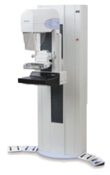
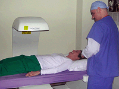

Imaging / Radiology Services
Albany Med offers the most advaced imaging and diagnostic technology available to better meet your needs.
The Lorad Selenia - Digital Mammography

The Lorad Selenia digital mammography system allows for deeper penetration of dense tissue.
This
full-field digital mammography system combines the latest advances in
technology with sophisticated infonnation management capabilities to
provide highly aCCUIate and efficient mammography exams. Our version
utilizes the most recent Digital Mammography - Second Generation, which
does not require light, but rather a direct transfer of information.
resulting in clearer images. This unique capability exposes areas of
breast tissue that can sometimes be too dense for viewing.
Computed Tomography (CT) System
Our new advanced
LightSpeed Pro 16-slice CT scanner (also known as "CAT scanner") offers
extremely fast. high resolution imaging thar results in improved image
quality and diagnostic capabilities. This modern technology allows us
to offer improved neurological, renal, abdominal, pelvic, chest and
lung studies as well as new procedures such as CT Angiography.
Additionally, we are able to accommodate specific pediatric cases.
Magnetic Resonance Imaging (MRI)
Including both
integrated Breast MRI as well as MRI Guided Breast Biopsy, this latest
technology allows a Digital Stereotactic Breast Biopsy to be perfonned.
Such technology enables the radiologist to perfonn a biopsy during the
MRI, thereby streamlining the diagnostic process and making it possible
to biopsy suspicious tissue that may have been otherwise difficult to
target. Also available are Chest, Abdominal, Cranial, Lumbosacral Spine
and Spine MRI.
New Digital Fluoroscopy Unit
Our advanced
digital fluoroscopy unit enables us to make a moving X-ray of internal
organs while facilitating a faster diagnosis translation.
DEXA Bone Densitometry

DEXA (Dual-Energy X-ray Absorptiometry) bone densitometry scanners are used to measure bone loss.
This
enhanced form of X-ray technology is used to measure bone loss in our
patients and is most commonly relied upon for measuring osteoporosis.
State-of-the-art Ultrasound Suites
Our private
and modern ultrasound suites offer patients exceptional comfort while
high frequency sound waves evaluate their first-trimester pregnancies,
vascular, blood clots and other medical conditions.
Computed Digital Radiography
Our digital
capabilities allow for films to be electronically transferred between
sites, resulting in a quicker reading by eliminating the need to
hand-deliver film from one location to another.
R2 Checker
The checker uses a computer system
to identify and mark "regions of interest" for the radiologist. This
scanning technology enables our radiologists to get the most precise
read of films.